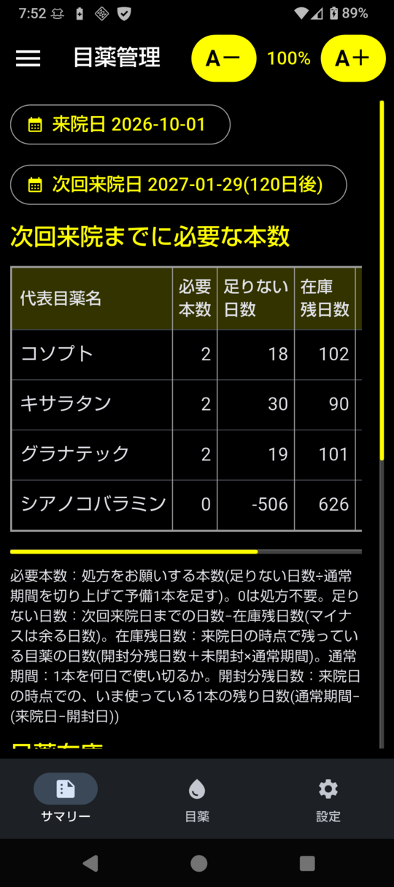
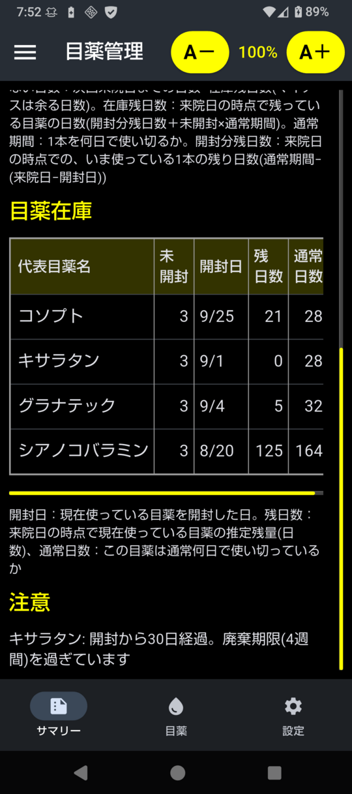
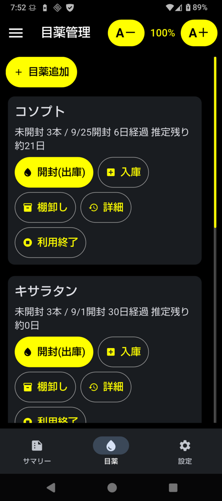
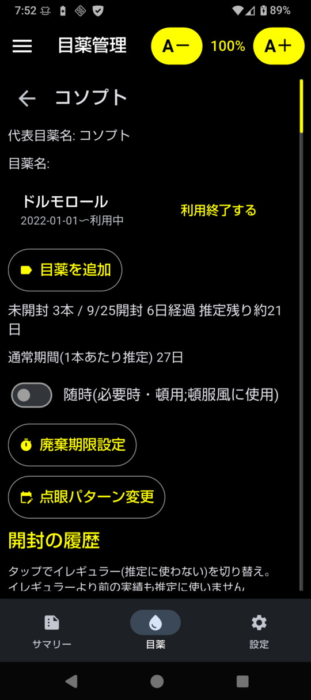

Android版
個人で Google Play に登録するのは大変なので、いわゆる野良APK です。 データは端末の中だけにあり、ネットワークは使いません。
動作環境
Android 7.0 以上
64bit の ARM 端末(arm64-v8a)。スマホ・タブレットとも可
実機で確認したのは Android 16(シャープ AQUOS sense8)と Android 10(TECLAST M40 タブレット)
インストール
GitHub の Releases から eyedrop.apk をダウンロードし、次のどちらかでインストールします。
スマホで直接インストールする
スマホのブラウザで
eyedrop.apkをダウンロードダウンロードした
eyedrop.apkをタップ「この提供元のアプリを許可」を求められたら、ブラウザ(またはファイルアプリ)に許可してインストール
PC から USB 経由でインストールする
スマホで「設定 → デバイス情報 → ビルド番号」を7回タップし、開発者向けオプションで「USB デバッグ」をオン
スマホを USB で PC につなぎ、「USB デバッグを許可」で許可
PC で次を実行(
adbは Android SDK Platform-Tools に含まれます)
$ adb install -r eyedrop.apk
インストール直後はデータが空です。「目薬」タブで目薬を追加するか、
バックアップ(または CLI版の eyedrop.db)を「設定」タブの「ファイルから復元」で取り込みます。
アプリを上書きで更新してもデータは消えませんが、機種変更などに備えて
「設定」タブの「ファイルに保存」でときどきバックアップしてください。
署名の確認(フィンガープリント)
配布している APK は次の証明書で署名しています。 ダウンロードした APK が本物かどうかは、証明書の SHA-256 フィンガープリントがこれと一致するかで確かめられます。
証明書:
CN=kuma35SHA-256:
97:4A:8A:A3:16:77:C6:CF:66:BA:03:AE:A0:47:88:37:CB:A8:07:05:83:62:6D:FD:34:35:8F:32:19:23:4D:A0
確認には Android SDK Build-Tools の apksigner を使います(keytool -printcert -jarfile では読めません)。
$ apksigner verify --print-certs eyedrop.apk
Signer #1 certificate DN: CN=kuma35
Signer #1 certificate SHA-256 digest: 974a8aa31677c6cf66ba03aea0478837cba8070583626dfd34358f3219234da0
...
画面と使い方
画面は下部のタブで切り替えます。画面の例は サンプルデータ で、次回来院日を4ヶ月後にしたものです。 画面上部の「A－」「A＋」で文字の大きさを変えられます。
サマリー


来院日(既定は今日)と次回来院日(既定は来院日の2ヶ月後)を表示し、 次回来院までに必要な本数を目薬ごとに計算します。 来院日・次回来院日は押すとカレンダーで変えられます。 表は横にスクロールでき、必要本数に続いて根拠(足りない日数・在庫残日数・未開封・通常期間・開封分残日数)を表示します。 計算のしかたは 推定のしくみ を参照してください。


下にスクロールすると「目薬在庫」(未開封の本数、開封中の1本の開封日・推定残日数、通常何日で使い切っているか)と、 廃棄期限を過ぎているなどの「注意」があります。 左上のメニューから、サマリーを Markdown・テキスト・チャットAI 用でコピーできます。
目薬


目薬ごとのカードで、次の操作をします。
開封(出庫): 新しい1本を在庫から出して使い始める。使っていた1本は使い切りとして記録
入庫: 処方された本数を記録
棚卸し: 未開封の本数を数え直したときに記録
詳細: 目薬名・開封の履歴・在庫の履歴など
利用終了: その目薬(代表目薬名ごと)を使わなくなったとき
上の「目薬追加」で新しい目薬を登録します。
目薬の詳細


目薬名: ジェネリックなどで実際にもらう目薬の名前が変わったら「目薬を追加」。 代表目薬名(例: コソプト)はそのままで、目薬名(例: ドルモロール)を追加・利用終了できます
随時: 毎日ではなく必要なときに使う目薬。必要本数を計算せず在庫だけ表示します
廃棄期限設定: 「開封後4週間で廃棄」などの目安。過ぎると「注意」に表示します
点眼パターン変更: 1日の点眼回数などが変わったとき。直近の1本をイレギュラーにし、 それより前の実績を推定に使わないようにします
開封の履歴: タップでイレギュラー(推定に使わない)を切り替えます。 一番新しい開封は取り消せます
設定
バックアップ(ファイルに保存・共有で送る)、ファイルから復元、年次更新、 次回来院日の既定の期間、表示(黒地に白)を設定します。
ビルド
Linux(Ubuntu 24.04 で確認)で APK を作る手順です。ビルドする PC には Python 3.10 以上が必要です (スマホには Python は不要です。APK に同梱されています)。
$ git clone https://github.com/kuma35/eyedrop.git eyedrop
$ cd eyedrop
$ python3 -m venv venv
$ venv/bin/pip install -r requirements.txt
$ cd mobile
$ ../venv/bin/flet build apk --yes --arch arm64-v8a # → build/apk/eyedrop.apk
$ ~/Android/sdk/platform-tools/adb install -r build/apk/eyedrop.apk # USB でつないだスマホへ
初回のビルドは Flutter・JDK・Android SDK を自動で取り込むので時間がかかります(Android SDK は
~/Android/sdk)32bit の ARM 端末向けには
--arch armeabi-v7aで作りますAPK は PC の開発用の鍵(
~/.android/debug.keystore、自動作成)で署名されます。 上書き更新には同じ鍵で署名した APK が必要です。配布版の APK を入れたスマホに自分でビルドした APK を入れるときは、 先にバックアップを取ってアンインストールしてから入れ、「ファイルから復元」でデータを戻してください